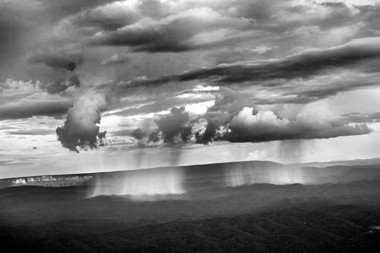

"#1676" — Serra do Parima, estado de Roraima, Brasil, 2018
Amazônia, 2022 · Foto Digital · #1676 ERC-721
A cordilheira que define a vida da bacia amazônica fica no extremo oeste do Brasil. Mas, se os Andes fornecem a maior parte da água que flui através de centenas de afluentes para o Rio Amazonas, o Brasil também pode se orgulhar de ter montanhas. Ao sudeste encontram-se os Planaltos Brasileiros, que incluem o estado de Minas Gerais, rico em minerais. Seguindo para o norte em direção ao coração da floresta tropical, a paisagem permanece ondulada, com uma colina conhecida como Serra Pelada, no estado do Pará, atraindo uma das maiores corridas do ouro da história do país na década de 1980. Ainda mais perto do Rio Amazonas, grandes formações rochosas ocasionais surgem como intrusas na ordem tranquila das terras baixas.
| Artista | Sebastião Salgado |
| Coleção | Amazônia — 2022 |
| Mídia | Foto Digital |
| Token | #1676 ERC-721 (Ethereum) |
| Contrato | 0xf1f036ce…64fb80fc |
| Arquivo | Ver no Arweave |
| Procedência | Sotheby's (lançamento original) |